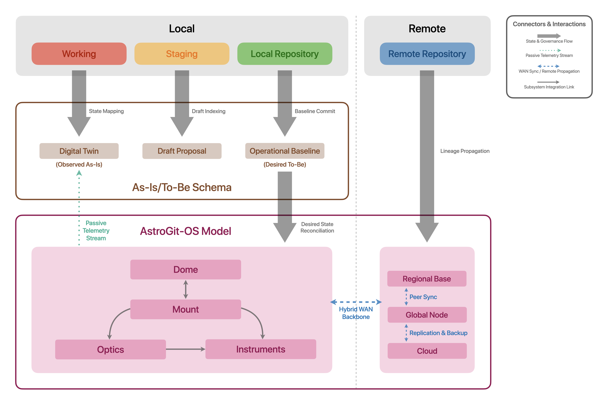

AstroGit-OS
Arquitectura GitOps para la Gobernanza de Estados y el Linaje Operacional de Instrumentación Astronómica
Current Status: Phase 0 / Draft
Next Milestone: Read-only demonstrator against a representative operational subsystem.
White Paper Release: Early Q4 2026
AstroGit-OS es un modelo documental de referencia para la configuración, mantenimiento y el linaje operacional de la instrumentación optomecánica de observatorios astronómicos de nueva generación. Aplicando principios de GitOps e Infrastructure-as-Code, AstroGit-OS desacopla datos astronómicos masivos de metadatos operativos para la gestión de la infraestructura científica.

Propuesta de Valor
Mediante una arquitectura de conciliación de estados (To-Be deseado vs. As-Is observado), AstroGit-OS gobierna la evolución de la infraestructura, detecta desviaciones entre el estado observado y la configuración autorizada (drift), y vinculación verificable entre bloques de observación y el estado operacional versionado mediante telemetría pasiva y agentes de extracción de estado no intrusivos para reducir la incertidumbre operacional, disminuir los tiempos de inactividad y facilitar la reproducción de condiciones técnicas en el uso científico de la instrumentación astronómica.
Alcance de AstroGit-OS
AstroGit-OS no captura, almacena, procesa, simula ni transmite datos astronómicos, como tampoco opera telescopios en tiempo real. Su función es gobernar una representación digital versionada y asíncrona del estado operacional de telescopios y demás infraestructura científica, desacoplando las actividades científicas de las operaciones de ingeniería. AstroGit-OS registra, almacena y audita la evolución de la configuración de infraestructura mediante Git como mecanismo versionado de gobernanza, manteniendo separadas la representación declarativa del estado operacional y su implementación física sobre la instrumentación.
Diferenciadores Clave
- Linaje Científico sin Datos Masivos
Asocia cada bloque de observación astronómica con un identificador SHA-256 del estado operacional del hardware, logrando una trazabilidad científica verificable sin saturar el repositorio con datos masivos.
- Resiliencia Operacional Distribuida
Contribuye a la continuidad operacional y recuperación de configuraciones versionadas en observatorios remotos de alta montaña mediante topologías Git descentralizadas y sincronizadas. - Gobernanza Declarativa No Intrusiva
Traduce el mantenimiento de la infraestructura en un flujo auditable mediante Pull Requests y aprobación humana, operando de forma estrictamente asíncrona sin interferir con las operaciones en tiempo real de los telescopios.
Desafíos Operacionales de la Optomecánica Astronómica
Los observatorios de gran escala operan en entornos optomecánicos de extrema precisión, donde variaciones térmicas, mecánicas, ópticas y de alineación pueden afectar las condiciones bajo las cuales se adquieren los datos científicos. La operación de esta infraestructura genera información distribuida entre sistemas de control, bases de datos, registros de mantenimiento y mecanismos de configuración, cada uno orientado a funciones operacionales específicas.
Esta heterogeneidad puede fragmentar la representación histórica del estado de la infraestructura, dificultando su reconstrucción como un registro coherente, contextualizado y verificable. Para superar este desafío, no basta con registrar eventos, configuraciones o estados, sino en preservar la capacidad de reconstruir de manera reproducible el estado operacional de la infraestructura a lo largo de su ciclo de vida. Esto requiere vincular configuración, estado observado, cambios autorizados y contexto operacional dentro de una representación histórica consistente, independiente de la fuente original y susceptible de verificación posterior.